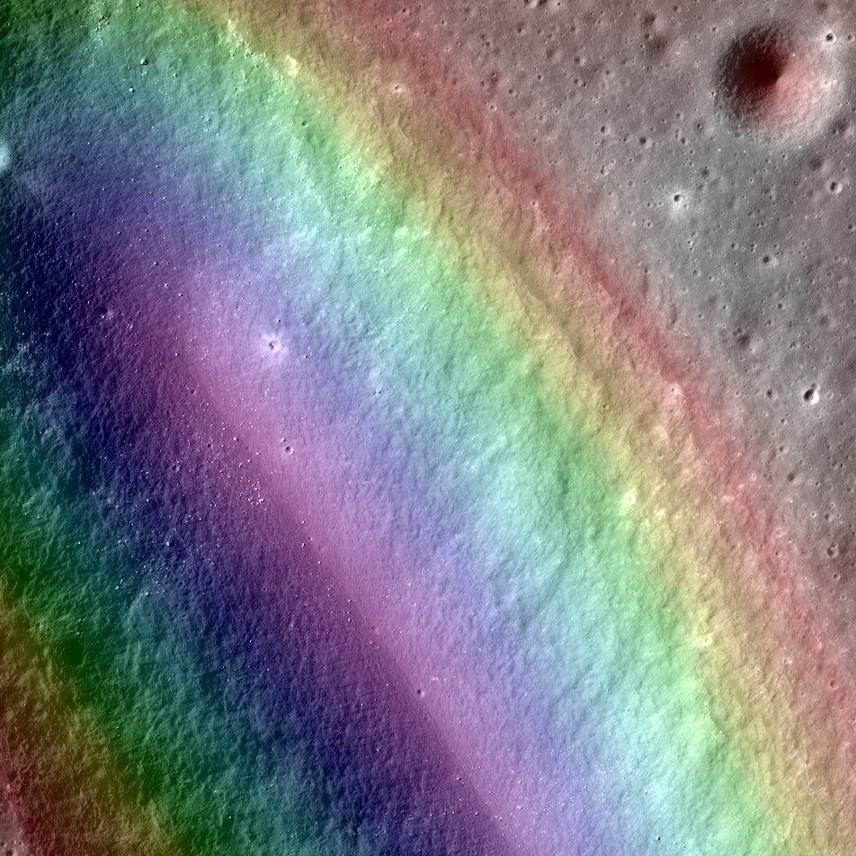

The Moon is not shrinking or growing — it is a ball hanging in sunlight, and you are only ever seeing a slice of it. Here is the real reason for the phases.
Night after night, the Moon looks different. One evening it is a thin smile of light. A week later it is a big bright plate. Then it shrinks again to nothing and starts over. It is tempting to think the Moon is changing shape — puffing up and deflating like a balloon. But the Moon is not changing at all. What is changing is you, or rather, where you and the Moon are. Here is the truth, and it is stranger and more beautiful than a shape-shifting rock.
The Moon makes no light of its own
First, a big clue: the Moon does not glow. The "moonlight" you see is actually sunlight bouncing off the Moon's surface. The Moon is just a very big, very dusty mirror.
Now here is the key idea. Hold a ball in front of a lamp. The lamp can only light up half of the ball — the half facing the light. The other half is in shadow. The Moon is exactly the same. The Sun always lights up one half of the Moon (its day side) and leaves the other half dark (its night side). That never changes. Half the Moon is in daylight, half in darkness, all the time.
So if half the Moon is always lit, why don't we always see a full Moon?
It is all about the viewing angle
Because the Moon is always half-lit but we only see the lit half from where we stand, and the Moon is moving around us the whole time, we catch different amounts of sunlit surface depending on the night.

Picture yourself on a merry-go-round slowly spinning past a single streetlamp. When you face the lamp, it lights your whole face. As you turn, the lamp catches only the side of your face, then just your back. To a friend standing still across the way, the part of you that looks bright keeps changing — even though the lamp never moved and your face never changed shape.
The Moon orbits Earth about every 27.3 days. As it travels along that path, we on Earth see a shifting slice of its lit half. That changing view is what we call the Moon's phases.
The full cycle: why about a month?
Here is a neat wrinkle. The Moon takes 27.3 days to loop once around Earth. But the time from one full Moon to the next full Moon is a little longer — about 29.5 days.
Why the gap? Because while the Moon is busy going around Earth, Earth is also busy carrying the Moon along as it travels around the Sun. By the time the Moon has finished one lap around us, its geometry with the Sun has shifted a bit, so it needs a couple of extra days to line up into the same phase again. Those 29.5 days are a lunar month, the "month" the Moon itself hands us — and people around the world have used this cycle to keep time for thousands of years.
The eight shapes
We give the in-between stages names. As the bright part grows, the Moon is waxing; as it shrinks, it is waning. Moving through one full month, we see all of these:
- New Moon — the lit half faces away from us, so the Moon seems to vanish (it is still up there, in daylight, just invisible against the bright sky).
- Waxing crescent — a thin sliver of light appears on one side.
- First quarter — half the face is lit (a "half Moon").
- Waxing gibbous (say: GIB-us) — more than half, still growing.
- Full Moon — the whole lit face points at us, a bright disk.
- Waning gibbous — now shrinking, still more than half.
- Third quarter — the opposite half is lit.
- Waning crescent — a last thin sliver on the other side.
Then the cycle resets to New Moon and begins again.
The side you never see
One more surprise. We only ever see one face of the Moon — the "near side." The far side is always hidden. That is because the Moon spins on its axis exactly once for every orbit it makes, a neat locking called tidal locking (say: TY-dul). It turns at just the right speed to keep the same half permanently aimed at Earth, like a dancer doing a slow pirouette while always keeping their gaze on you. So there is a whole half of the Moon that no human ever saw with bare eyes until we sent spacecraft around to photograph it.
The takeaway
So the Moon does not change shape, and it does not grow or shrink. It is a rocky world hanging in sunlight, forever half-bright and half-shadowed. What changes is the slice we happen to see as it swings around us — a slow, reliable 29-and-a-half-day dance of light. The same Moon that lit up your window last week will be back, in time, as a thin crescent starting the whole cycle over again.
Sources: NASA Space Place — What Are the Moon's Phases? · National Geographic Kids — The phases of the Moon · ESA — Space for Kids: Moon phases